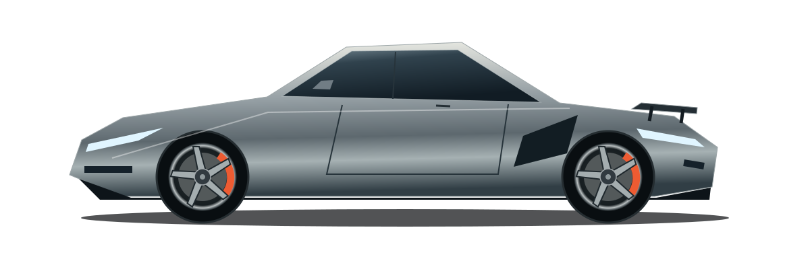

3D недоступно в этом браузере. Конструкцию можно изучить с помощью кнопок ниже.
ИСКУССТВО ЧУВСТВОВАТЬ ДОРОГУ
Чистая форма
скорости.
Скульптура скорости
Каждая линия кузова направляет поток воздуха. Каждая поверхность работает на движение.
МЕНЬШЕ ВЕСА.
БОЛЬШЕ ЧУВСТВ.
Есть автомобили, которые перемещают.
И есть те, что меняют пульс.
V01 создан вокруг одного ощущения — абсолютной связи водителя с дорогой. Без фильтров. Без компромиссов. Только вы, поворот и следующий горизонт.
Воздух —
тоже двигатель.
Не бороться с потоком.
Стать его продолжением.
Передний сплиттер, плоское днище и активное антикрыло работают как единая система. Меняйте режим — почувствуйте, как меняется характер V01.
180кг
прижимной силы*
STRADA — баланс устойчивости и свободы. Минимальное сопротивление на длинных прямых.
* Концептуальные показатели при 250 км/ч.03 / ПРИРОДА СОВЕРШЕНСТВА
Сила.
Внутри.
Монокок из углеволокна. Алюминий, обработанный с точностью до микрона. Механика, которую хочется рассматривать.
Настоящая роскошь — когда в каждой детали есть смысл. Даже в той, которую никто не видит.
Ваш характер.
Ваш AUREL.
Три оттенка.
Тысяча способов выделиться.
Argento Luna
Холодное серебро. Точная геометрия света.
- Диски
- 20″ Forged / Graphite
- Отделка
- Карбон · Alcantara
- Двигатель
- V8 4.0 Twin Turbo
НЕ ДЛЯ КАЖДОГО. ДЛЯ ВАС.